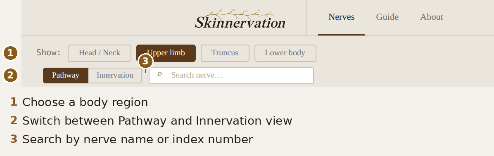
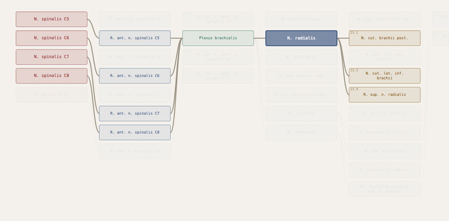
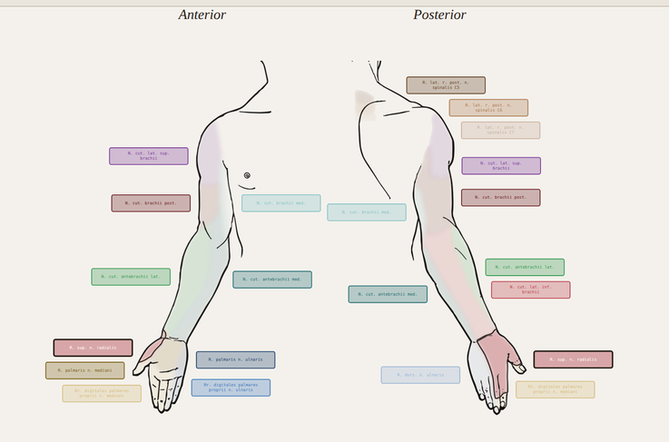

Quick start
Skinnervation maps the cutaneous innervation of the whole body — from spinal root to the patch of skin it supplies.
- Pick a body region in the toolbar — Head/Neck, Upper limb, Truncus or Lower body.
- Click a nerve to trace its pathway from spinal cord to skin.
- Switch to Innervation to see the skin area that nerve supplies.
- Or click a skin area directly to find out which nerve supplies it.


Pathway
The nerve's course as a diagram — spinal root to cutaneous branch.

Innervation
The nerve's skin territory, drawn on the body from front and back.
Note: Cutaneous territories are approximations. Individual variation is considerable, particularly at borders, and findings should always be interpreted in clinical context.
Regions
The index is divided into four anatomical regions:
Head / Neck
CN V, VII, X · C2–C4
Trigeminal, facial and vagal cutaneous branches, with the cervical plexus supplying the posterior scalp, neck and upper shoulder.
Upper limb
C5–T1
Brachial plexus derivatives covering the arm, forearm and hand.
Truncus
T2–T11
Intercostal nerves and their lateral and anterior cutaneous branches, forming segmental bands across thorax and abdomen.
Lower body
T12–Co
Lumbar, sacral and coccygeal plexus branches supplying the lower abdomen, perineum, gluteal region and lower limb.